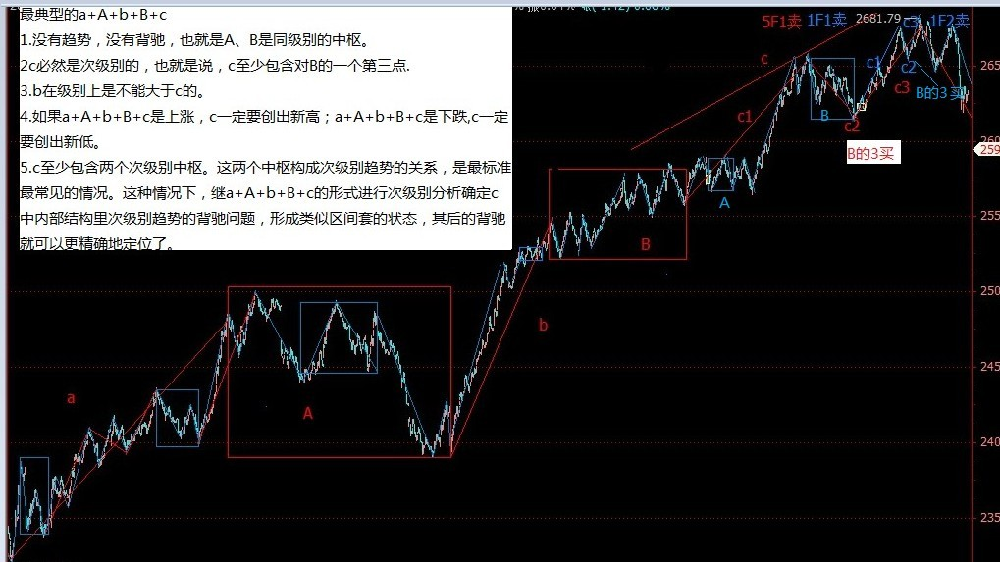
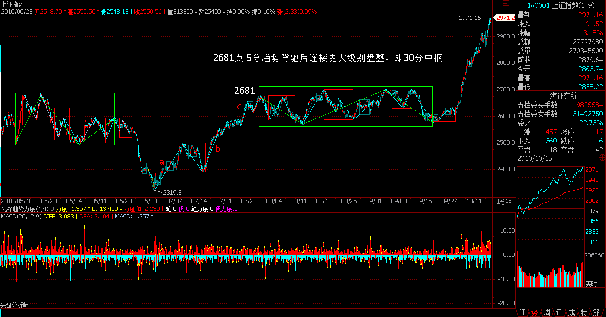
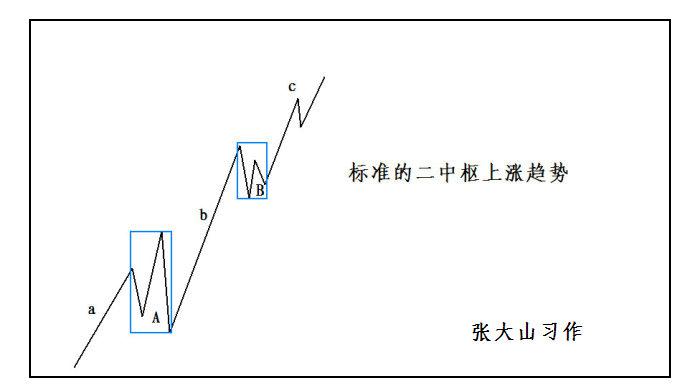
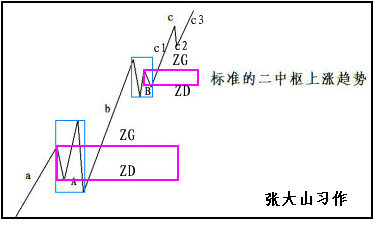
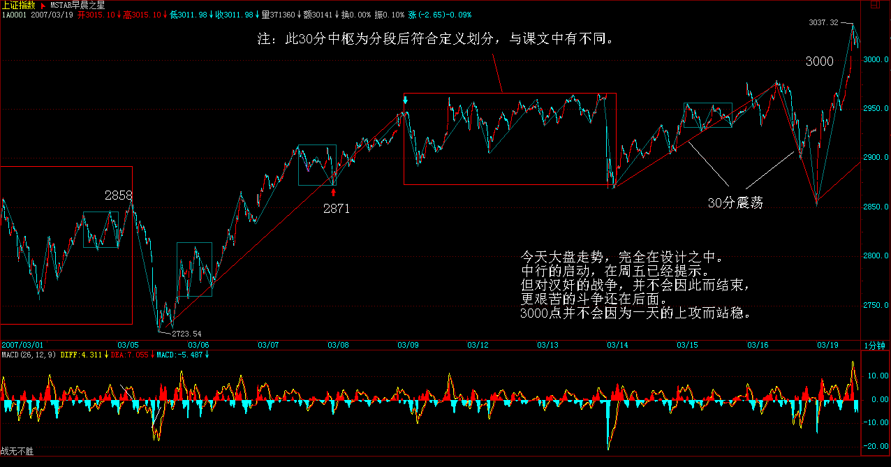
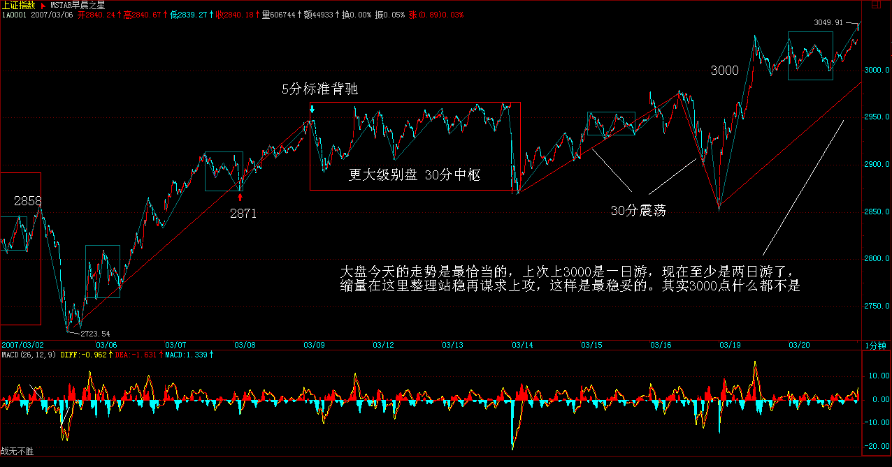
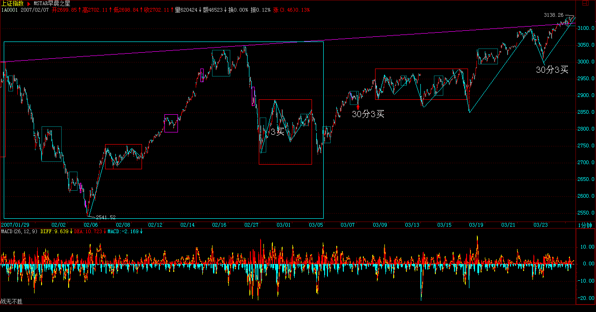

教你炒股票37：背驰的再分辨
2007-03-16 11:51:32)
背驰问题说过多次，但发现还有很多误解。不妨用最典型的a+A+b+B+c为例子把一些经常被混淆的细节进行说明。
没有趋势，没有背驰，不是任何a+A+b+B+c形式的都有背驰的。当说a+A+b+B+c中有背驰时，首先要a+A+b+B+c是一个趋势。而一个趋势，就意味着A、B是同级别的中枢，否则，就只能看成是其中较大中枢的一个震荡。例如，如果A的级别比B大，就有a+A+b+B+c=a+A+（b+B+c），a与（b+B+c）就是围绕中枢A的一些小级别波动。这样，是不存在背驰的，最多就是盘整背驰。当然，对于最后一个中枢B，背驰与盘整背驰有很多类似的地方，用多义性，可以把b、c当成B的次级波动。但多义性只是多角度，不能有了把b、c当成B的次级波动这一个角度，就忘了a+A+b+B+c是趋势且A、B级别相同的角度。多义性不是含糊性，不是怎么干怎么分都可以，这是必须不断反复强调的。
其次，c必然是次级别的，也就是说，c至少包含对B的一个第三类买卖点，否则，就可以看成是B中枢的小级别波动，完全可以用盘整背驰来处理。而b是有可能小于次级别的，力度最大的就是连续的缺口，也就是说，b在级别上是不能大于c的。例如，如果b是次级别，而c出现连续缺口，即使c没完成，最终也延续成次级别，但c是背驰的可能性就很小了，就算是，最终也要特别留意，出现最弱走势的可能性极大（扩展后续涨续跌）。
还有，如果a+A+b+B+c是上涨，c一定要创出新高；a+A+b+B+c是下跌，c一定要创出新低。否则，就算c包含B的第三类买卖点，也可以对围绕B的次级别震荡用盘整背驰的方式进行判断。
对c的内部进行分析，由于c包含B的第三类买卖点，则c至少包含两个次级别中枢，否则满足不了次级别离开后次级别回拉不重回中枢的条件。这两个中枢构成次级别趋势的关系，是最标准最常见的情况，这种情况下，就可以继续套用a+A+b+B+c的形式进行次级别分析确定c中内部结构里次级别趋势的背驰问题，形成类似区间套的状态，这样对其后的背驰就可以更精确地进行定位了。
最近太忙，不能写太长了。补充两句关于大盘目前的走势，说实在，现在如果要摆脱目前的中枢，没有金融股的配合基本是不可能的。但金融股由于某类人掌握得比较厉害，短线的攻击没问题，但一个持续的攻击，就有点困难了。不过金融股在中线角度，依然还是一大早的观点，用工行为例子，就是围绕5元上下的一个大级别震荡，要大跌，打压的人是要付出代价的。顺便说一句，中行里的汉奸实力小点，中行有奥运概念、业绩也较好一点，能否改造成一个反汉奸的武器，成为一个突破口，还需要很大的努力。其实这改造已经不是一天两天的事情，中行这几天已经连续比工行股价要高了，这就是成绩。具体的细节就不说了，总之，斗争是残酷的，是复杂的，不能赤膊上阵，要用最充分的耐心去消耗汉奸的实力。
(注：2007年3月19日，也就是此文后第二个交易日缠主和同盟拉动中国银行，带领大盘向上突破）
下午一收盘就要去开反汉奸利器出炉的最后一次会议，就来不了了。大盘走势，很简单，在第三类买点出现前，继续震荡，这种走势已经反复很多次了，应该熟练应对了，所以也没必要多说了。
（注：例图节选2010年上证 2319-2681 1分趋势背驰区间套5分趋势背驰）




每日解盘(2007-03-16 11:51:32)
现在如果要摆脱目前的中枢，没有金融股的配合基本是不可能的。但金融股由于某类人掌握得比较厉害，短线的攻击没问题，但一个持续的攻击，就有点困难了。不过金融股在中线角度，依然还是一大早的观点，用工行为例子，就是围绕5元上下的一个大级别震荡，要大跌，打压的人是要付出代价的。顺便说一句，中行里的汉奸实力小点，中行有奥运概念、业绩也较好一点，能否改造成一个反汉奸的武器，成为一个突破口，还需要很大的努力。其实这改造已经不是一天两天的事情，中行这几天已经连续比工行股价要高了，这就是成绩。具体的细节就不说了，总之，斗争是残酷的，是复杂的，不能赤膊上阵，要用最充分的耐心去消耗汉奸的实力。
缠中说禅：
2007-03-16 11:54:37 汉奸企图用两会结束打压的表演还会继续，这在昨天已经说了，所以斗争依然继续，结果不好说，努力吧。反正有的是时间，不会硬扛，但也不会放过任何一个契机的。
先下，再见。
每日解盘（2007-03-19 15:18:14 ）
缠中说禅：
2007-03-19 15:18:14 今天大盘走势，完全在设计之中。中行的启动，在周五已经提示。但对汉奸的战争，并不会因此而结束，更艰苦的斗争还在后面。3000点并不会因为一天的上攻而站稳。一个重要的问题就是，如果还是以老思维或者汉奸思维来统治市场的思维，那么罗杰斯之流最近的怪叫你就愿意听还是愿意听还是愿意听了。
(注：再次说明，禅师58课分段前后的级别不同，下图30分中枢为递归后的5分中枢。
下图为递归级别1分趋势背驰后连接5分中枢的典型图）

这次大盘成分股的启动能否成功，其实取决于市场的每个参与者，火点起来了，但是否燎原，这不是本ID能决定的，市场是大家的，不是本ID一个人的。本ID已经干了所有该干的事情，当然，本ID只会根据当下的情况采取不同的手法，一定不会狂接硬撑。只要火真的燎原了，什么汉奸都是白费的。
个股没什么说的，中国经济的大局在新的经济结构，所谓改变经济增长方式，因此站在中长线角度，前期一直强调的环保（特别强调过包括新能源）、农业、军工、科技等等板块都是值得中长线关注的，这是中国经济发展的新方向。
当然，短线决战在金融股，银行、保险等，都是决战场所。显然，汉奸目前的实力还是很厉害的，本ID已经有了长期抗战的准备，越震荡，成本越低，没什么大不了的。不过，一旦有机会突破，这机会是不会放过的。大盘具体走势，按照中枢自己就可以分析，本ID要先下，还有会议在后面。
再见。
神州自有中天日，万国衣冠舞九韶(2007-03-19 08:52:42)
西海东瀛涨落潮，商林股道冷炎飙。
神州自有中天日，万国衣冠舞九韶。
以美欧日为动力源的全球化经济在2000年网络泡沫后出现历史性的发展瓶颈，而中国经济的崛起，是资本全球化历史与现实的必然要求，是一个有别于欧美日的全球经济新动力源的必然选择，是一个拥有最多人口、最大潜在市场的新兴经济体的必然承担，是不以任何人的意志为转移的必然趋势。当中国经济成为全球化新动力源时，中国股市也应当成为世界股市的新龙头，成为面向世界的超级大市场。中国的交易所，必将成为世界性交易所，世界上的公司必将以能到中国上市为荣。这一切，将成为中国新一轮特大型牛市真正的动力源泉。对此的任何短视，都将错失这一历史性机遇。
从1986年9月26日延中实业上柜交易始，到2001年6月14日2245.42点止，近15年充满曲折的第一轮大牛市带来了其后一轮长达四年、幅度超过50%的全面调整，也留下了一个制度上存在严重缺陷的市场与无数的争论。所有的争论最终达成一个最基本的共识：股票，作为一种交易凭证，其最基础的制度必须保证所有股票都有相同的流通属性。2005年6月6日，六六大顺，以全流通为标志的制度性改革拉开新一轮大牛市的序幕。而中国股市的制度性改革，归根结底是顺应经济全球化背景下中国经济历史性崛起的必然抉择。
这一轮特大型牛市，至少同级别于第一轮大牛市。后者，即使从1990年的95点算起，最终涨幅也超过22倍。而世界股市的历史表明，第二轮大牛市的时间与幅度都无一例外地远远超越第一轮，即使按照最保守的1.5比例，由此可以推断，从998点起步已延续两年、上升2千点的新一轮特大型牛市，仍将至少再延续20年、上升3万点。站在中国成为全球经济新动力源的历史背景上，可以预言，这轮波澜壮阔的特大型牛市行情将分为三大阶段：
第一阶段行情，伴随着中国股市本身的制度性、结构性完善，其后，中国股市才真正具备参与全球化盛宴的资格。全流通、整体上市、两大交易所的功能重组、人民币逐步可自由兑换等，都不过是这种制度性、结构性完善的必然步骤。这一阶段，行情最主要体现在以权重股为代表的成分股上。在总市值超越GDP之前谈论股市的泡沫是可笑的，在中国股市总市值超越其GDP之前，第一阶段行情不会结束。
第二阶段行情，伴随着中国参与全球化进程的深入，越来越多的中国公司将逐步成长为全球化公司、中国市场将逐步成长为全球化市场、中国股市也将成长为与中国国际地位相匹配的全球化股市、大中华圈股市的一个彻底的结构性重组将成为现实。这一阶段，行情最主要体现在那些拥有全球成长性的股票上，以全球成长性为标志。在中国股市成为亚洲市值最大、最重要的股市之前，第二阶段不会结束。
第三阶段行情，伴随着世界全球化格局的历史性变化，中国经济将从新动力源变成最重要的动力源，中国市场也将成为世界上最重要的市场，正像中国GDP必将超越美国GDP，中国股市也将成为世界上最重要的股市，中国股市将成为整合、重组世界经济资源的最重要场所。这一阶段，行情最主要体现在那些拥有全球整合、重组能力的股票上，以全球整合、重组为标志。在中国股市成为世界上市值最大、最重要的股市之前，第三阶段不会结束。
中国需要世界，而全球化经济下的世界更需要中国，这是现实要求也是历史必然。在这样一个历史性背景下，即使出现所谓的泡沫，也只能是阶段性泡沫。让中国经济成为世界经济的新动力，让中国金融市场成为世界金融市场的新龙头，这就中国成为负责任大国所应该负起的历史性责任。而这一轮历史性大牛市，不过是这历史性责任的一个必然的历史性呈现。这历史性的舞台，将赋予所有参与者历史性的机会，激发其最大的潜能与创造。
正是：西海东瀛涨落潮，商林股道冷炎飙。神州自有中天日，万国衣冠舞九韶。
每日解盘（2007-03-20 15:24:15 ）
缠中说禅：
2007-03-20 15:24:15 大盘今天的走势是最恰当的，上次上3000是一日游，现在至少是两日游了，缩量在这里整理站稳再谋求上攻，这样是最稳妥的。其实3000点什么都不是，只是一个心理问题，包括散户与管理层。管理层的水平，其实经常连散户都不如

汉奸在这里肯定是要干活的，前几次喜欢用嘴配合，这次还这样就太没意思了。难道汉奸用嘴就能得到快感？总之，在这里等汉奸看能出些什么花招，最好把所有花招都使出来，让散户也多点见识，心理承受得到锻炼。
个股没什么可说的，中行等休息，其他股票活跃，这是最好的情况。不过还是要提醒，如果是中线持股，除了用部分筹码打短差，就要持得住。并不是敢涨停的就一定是好股票。涨停算什么，最后能涨多少才是真实的。像前面说过某大叔抓不住的股票，就是600195的中牧，从去年4月中3元多开始到11元，从来就没涨停过，也没阻止他一年不到翻了5倍。如果一个股票涨了2倍还从来没涨停过，只有一种可能，就是他要涨5倍甚至10倍，因此根本不屑于用涨停来现眼。
反复震荡爬升的股票是股票中的极品，可以弄出无数的短差来，问题不是这股票有没有涨停，而是这股票波动大吗？最终潜力大吗？一定要把问题搞清楚。天天追涨停的，永远只能是散户，大一点的资金都根本不可能这样操作的。

石猴：
2007-12-09 22:15:33
1.A、B是同级别的中枢
2.c必然是次级别的，也就是说，c至少包含对B的一个第三类买卖点
3.b在级别上是不能大于c的
4.如果a+A+b+B+c是上涨，c一定要创出新高；a+A+b+B+c是下跌，c一定要创出新低
5.c至少包含两个次级别中枢
以上5点是理解趋势背驰的关键，如果不能清楚解释每一条是为什么，这课就没真明白
提个思考题：
形成（加定语趋势背驰段)三买的两个次级别走势类型，有哪几种方式组合方式.
(同分3买。趋势和盘任意组合）
缠中说禅：
2007-03-20 15:44:17
[匿名] ED男猿
2007-03-20 15:37:34
我今天就一个股没坐稳，抛后大涨。
心态浮躁，离市场太近未必是好事。
--
不是离市场太近，而是离市场太远。何谓近？对市场的当下一目了然；何谓远？对市场走势毫无头绪，只会瞎蒙。当你知道市场在干什么，心自解脱，不会被市场的波动所迷惑。
缠中说禅：
2007-03-20 15:46:50
一粒米
2007-03-20 15:41:57
缠MM好!
科技创新类(有自主知识产权)股票理应会是07年行情的主轴之一吧?
--
对，还有农业、环保、军工，以及第三产业，像旅游之类的。
========
缠MM好!
我觉得还有生物药业也是吧?谢谢!
==
药是去年就一直强调的，药是去年的酒，这话应该记得。
缠中说禅：
2007-03-20 15:54:24
[匿名] 百思不解
2007-03-20 15:30:51
缠MM好！求教：
通常提到背驰或盘整背驰，都指a+A+b这样的三段，其中A是一个本级中枢，a、b是次级以下走势，b与a比较是否背驰或盘整背驰。
那么三个连续次级走势a+b+c，构成一个本级中枢（或abc就是一个有三段次级走势的本级盘整走势），a和c也应算是围绕本级中枢的波动吧？那么a和c能做盘整背驰比较吗？
=
只要能比较力度，就可以用盘整背驰的方法。而背驰，必须在趋势中，因为背驰意味这一个趋势的结束，而盘整背驰不一定，可能还是同一个走势类型里。
缠中说禅：
2007-03-20 15:59:13
[匿名] 中间体
2007-03-20 15:53:55
国家政策是扶持农业, 但农业股一般都是业绩平平, 有潜力吗?
缠姐.
-
对农业的动作大了去了，现在还没开始。新农村建设是中国稳定的基石，不明白这，就不懂农业。
缠中说禅：
2007-03-20 17:39:28
[匿名] 一头雾水
2007-03-20 16:02:35
1、肯定具备中枢？最低级别分笔成交并不一定具备连续3笔同样价格就翻转的情况，个人认为是理论的不确定因素
==
理解错误，谁说连续三笔就翻转的？其实，这个定义并没有什么绝对性，明白数学中递归定义的实质，就知道对a0是如何定义，并不影响aN+1=f(an)的函数定义。就像分段函数中各段的定义之间可以是互无关系的。复习一下数学中关于递归的定义，会有帮助的。
2、中枢的公用问题。对于将1分钟最为最低，存在中枢公用的情况，假设1分钟涨势的只有高点和低点，形成中枢，紧接的1分钟跌势同样，那么存在两段走势公用高点中枢的情况
=
你要好好看看走势连接的结合性。哪里存在公用的问题？
3、a+A+b+B+c中，B不必然是A同级别的，我理解为这样一个走势类型的第二个中枢存在于B中，但是实际情况并不一定。
当我不能超逻辑的时候，需要逻辑的定义，希望早日出数学精确定义
==
还是好好研究结合性。结合性里，归到前面括号的在同一式子里就不能归到后面的括号，A+（B+C）不等于（A+B）+（B+C）。
关于中枢、扩展、延伸等的精确定义，都有了，要理解就好好去研究相应的公式。
缠中说禅：
2007-03-20 17:40:56
[匿名] 小学生
2007-03-20 17:37:11
先报到.
看了缠姐的一些炒股文章,觉得有点晕,不知道应该从哪章开始学起?
==
从头看起，但从有了中枢概念，前面关于均线的都只能是辅助，不要混在一起就行。
缠中说禅：
2007-03-20 17:51:11
[匿名] 努力学习
2007-03-20 17:33:57
楼主好，第18课有个定理有点疑问，该怎么理解？
定理三：某级别“缠中说禅走势中枢”的破坏，当且仅当一个次级别走势离开该“缠中说禅走势中枢”后，其后的次级别回抽走势不重新回到该“缠中说禅走势中枢”内。这定理三中的两个次级别走势的组合只有三种：趋势+盘整，趋势+反趋势，盘整+反趋势。
这定理三中提到的两个次级走势组合，比如“趋势＋盘整”，是否同级？这里说的是两个同级走势的连接，还是从走势组合观点看，那个盘整中枢级别高于趋势中枢级别？
=
这和连接的结合性有关。简单说，只要能分解出两段次级别走势就可以。详细情况，下几堂课程会说到，请耐心等等。明天就继续说这几种不同分解的问题。
缠中说禅：
2007-03-20 17:54:17
[匿名] 树叶红了
2007-03-20 17:47:27
读缠MM文章，渐渐悟其精义。
希望做缠的颜回。
很少有机会能请教到，今天幸得一机会。
大盘从0104调整到现在，从30分钟K线图上分明有16段了。按照博主的理论，3段30分钟的形成日线中枢，9段重叠则构成周线中枢，则现在周线中枢已经形成了。
此说对吗？但怎么没有人说形成了周线中枢？
读缠MM文章收获很大，谢谢缠MM！
=
很多其实都是5分钟级别的，现在如果能直接上去，这里的级别和去年5月后那次是一样的，只能算是日线级别的中枢。所以本ID前面说，甚至周线级别的中枢都不一定给汉奸面子。
缠中说禅：
2007-03-20 18:02:22
[匿名] 白玉兰
2007-03-20 17:45:27
禅妹妹：
我看了一下农业里有皮棉，生猪，蘑菇，种子，还有。。。
有关注重点吗？
==
其实现在的农业模式都是错的，农业股的潜力在于去挖掘一个真正适合的模式。本ID现在干的一件比股市里更大的事情，就是要把为中国的新农村建设构建的一种新模式推广出去，这涉及很大的方面。现在的人根本就不知道农业该怎么搞。
但国家的资源，将全力向农业倾斜，这个趋势是不可变改的。对于农业来说，大家的起跑线是基本一样的。目前暂时还是炒概念，但陆续有实质性的东西就会出来了，谁说搞农业的就搞不过白酒、有色之类的？这是一个长线的，至于实质的东西往哪个股票装，那是另外的问题了。蛋糕那么大，只要搞，都有份的。
缠中说禅：
2007-03-20 18:07:03
[匿名] 大盘
2007-03-20 17:57:52
博主：
请问，与股票相比，外汇买卖有什么特别不同的吗，或者说使用博主中枢理论需要更注意些什么，如果完全方法一样，炒外汇似乎可以有更多时间去打理，毕竟是24小时交易。而且现在交通银行也推出了5-15倍杠杠的外汇保证金交易，算起来一天的波动与股票接近。
==
期货趋势的延伸性特别强，所以如果不熟练的，用第二类买卖点比较安全，就怕你判断错误，在趋势延伸时当成第一类买卖点，就问题大了。还有很多不同的地方，以后会说到的。
不过，如果股票走势都判断不好，那就别玩什么期货了。先学会走，才能跑。
缠中说禅：
2007-03-20 18:16:44
[匿名] 缠文观止
2007-03-20 17:35:58
博主回来啦，还记着帮我们解答问题，感动ing...
下午的问题我重帖一下：
“缠中说禅买卖点定律一”：任何级别的第二类买卖点都由次级别相应走势的第一类买卖点构成。
－－－－－－－－－－－－－－－－－
上面的“缠中说禅买卖点定律一”，能简单证明一下吗？有个证明对真正理解第二买点会有很大帮助，否则实践中还是模糊，找不好次级别相应走势的结束点。中枢概念出来后，第一、二类买卖点在博文中似乎没有特别精确的定义，实践中细节还是把握不好。能不能象第三买点那样，给出公式性的定义？
另外，第三类买卖点是否与第二类买卖点类似，也由“次级别”相应走势的第一类买卖点构成？还是“次次级别”第一类买卖点构成？
还有个关于第三买点问题，比如一个“下上下”的30F中枢，第三段“下”完成后紧接着一个5F走势向上突破，接着又是一段向下的5F回抽走势不破30F中枢。这个5F回抽走势如果是盘整的话，完全可能不断延伸，怎么确定其结束点呢？好像看次次级一类买点也解决不了这个次级盘整延伸问题。
==
所有买卖点，归根结底都是第一类买卖点，只是级别不同而已。没有绝对的规则可以预先区分盘整与趋势的，第三类买点后，必然面对两个选择，就是大级别盘整或一个趋势。问题不是去预测究竟最后走出哪个，这样的思维是有问题的，而是当下走出什么情况立刻采取相应的操作策略。对盘整，就是制定好相应的操作策略，把筹码成本降下来，直到出现第三类买卖点为止。
像盘整延伸的问题，根本就无须去预测，只要走出第三类买卖点，自然就结束。至于什么时候走出，这涉及预测，任何涉及预测的，都是或然的。当然，可以有很多配套的手段使得准确率高达90%以上，但这另外的问题。
缠中说禅：
2007-03-20 18:20:10
[匿名] 朗月无花
2007-03-20 18:12:35
正在看你的理论，感觉困惑。你反复强调买点买、卖点卖。但对于小散户就有了一个问题，因为你的每一个举例都是1年2年才有买卖点。那可是太漫长了。如何短期操作啊？？
=
怎么现在还问这种问题，应该再看课程。你需要1天发现10个买卖点，也很简单，看分笔图就可以。如果你看1分钟图，一天怎么也能弄1、2个买卖点，弄权证就可以。
任何级别的操作模式是一样的，你明白了日线的，自然就可以去操作1分钟、5分钟的。问题是，你的资金、反应等是否适合去操作1分钟的。
缠中说禅：
2007-03-20 18:25:40
[匿名] 刻股铭心
2007-03-20 18:12:15
我们这也搞什么新农村建设 就是把老百姓的房子全扒了 不管新的 旧的 然后统一规划 统一建设一样的房子 这就是新农村啊
==
关于新农村的新模式，这里已早成熟，具体就不能说那么多了。总之，是超过现在可见的所有模式，新模式已经得到最权威的认可，不过下面还不知道而已。推广将全面展开，具体也不能多说了。
缠中说禅：
2007-03-20 18:36:26
[匿名] aaaaa
2007-03-20 18:10:05
老大:
股指期货推出会引起大跌吗?
请评一下股指期货推出对大盘的影响.
==
站在纯走势的角度，这些问题都是假问题。股指期货推出，对大盘的中长线趋势没有任何的影响，不过是一个借口与题材。但股指期货出现后，会加大走势的延伸性，这是必须注意的。
有了股指期货后，以后的指数，盘整的延伸将加强，但一旦突破形成趋势，那趋势的延伸也会加强。但总体大方向是没有任何影响的。
缠中说禅：
2007-03-20 18:39:22
[匿名] sn
2007-03-20 18:33:10
缠博主开门收徒吧！这个博里从学识到人品崇拜你的如过江之鲸．也不乏有识才俊！多几个帮手不更好吗？
==
人人皆佛，不要憋屈自己。就算当本ID的徒弟，也是憋屈自己。天地都是你的，关键是先把自己的眼打开。千里同风，何必开门收什么徒。
缠中说禅：
2007-03-20 18:44:19
[匿名] ED男猿
2007-03-20 18:34:24
正好老大在，提个问题
关于上下影线的问题
对于两个中枢间的上下影线重叠，有时这仅仅是一非常快带的波动，而如果就将此认为扩展，觉得不妥，不知如何处理，比如说，
海尔沽权的0.001，这个下影应该是可以忽略的吧。
记得以前老大回答过同样的问题，老大说看3根分钟线是否重叠，否则无效，请问这3根是连续的，还是只有属于一个中枢就行？
==
中枢算的是重叠部分，既然这样，一个偶然的波动就不会算到中枢里了。围绕中枢的波动，在理论上是可以任意价位的，但这不构成任何实质影响。 |